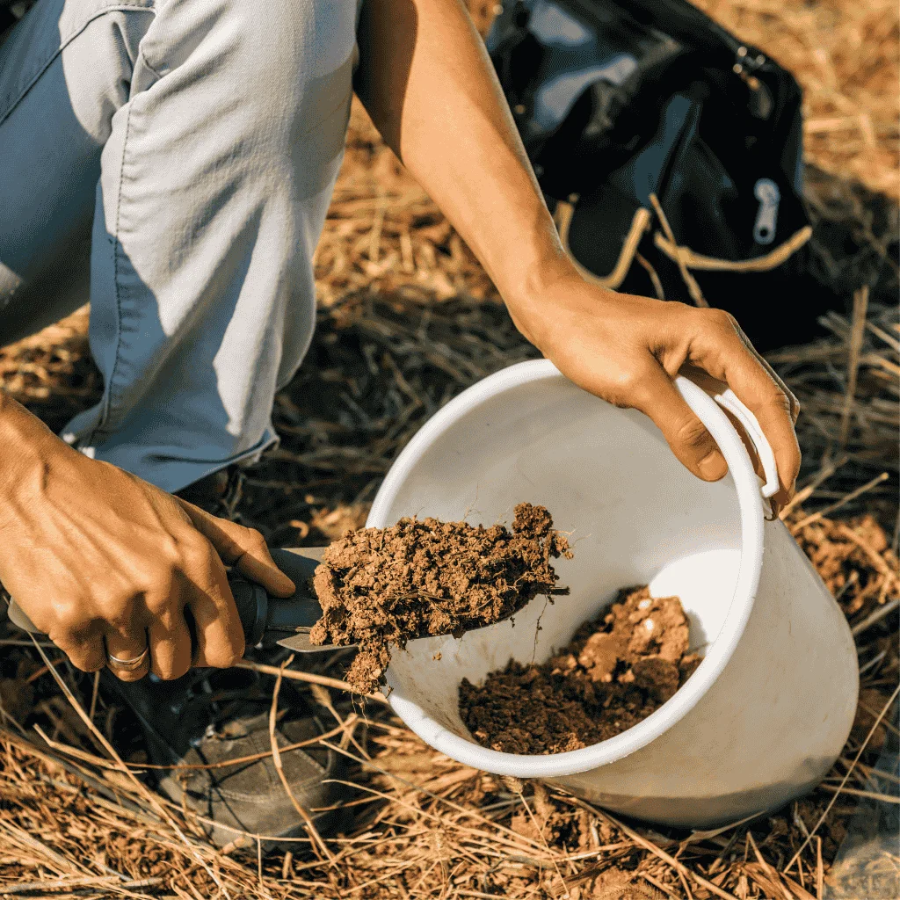
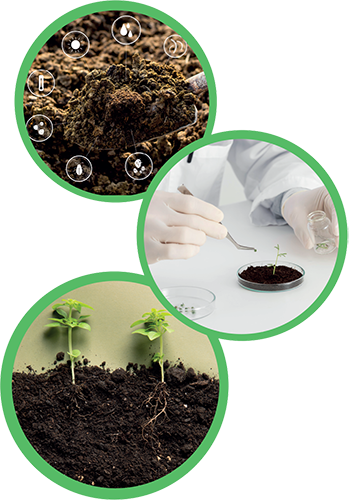
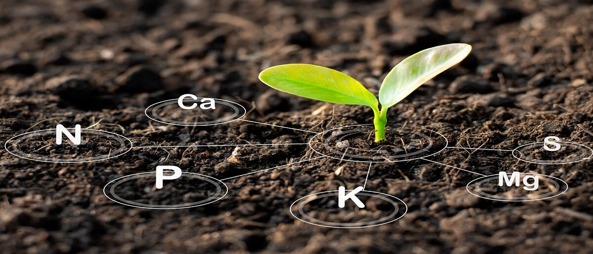

Toprak, gübre, yaprak ve sulama suyu analizleriyle doğru gübreleme programları hazırlıyor; üreticilere bilimsel, ekonomik ve sürdürülebilir tarım çözümleri sunuyoruz.
Toprak, gübre, yaprak ve sulama suyu ölçümleri.
Ürün ve parsel bazlı gübreleme önerileri.
Anlaşılır, teknik ve uygulanabilir analiz raporu.
Antalya merkezli tarımsal analiz ve danışmanlık.
Dlina Toprak ve Gübre Analiz Laboratuvarı, tarımsal üretimde verimliliği artırmak ve gereksiz girdi kullanımını azaltmak amacıyla laboratuvar analizleri ve uzman yorumlama hizmetleri sunar. Toprakta bulunan besin elementleri, pH, tuzluluk, kireç, organik madde ve benzeri temel göstergeler değerlendirilerek her parsel için uygulanabilir gübreleme önerileri hazırlanır.
Amacımız; çiftçilerin, üretici birliklerinin, tarımsal işletmelerin ve danışmanlık firmalarının doğru veriye dayalı karar almasını sağlamak; sürdürülebilir, ekonomik ve çevreye duyarlı üretim süreçlerine katkı sunmaktır.



pH, EC, kireç, organik madde, makro ve mikro besin elementleri değerlendirilerek parselin verimlilik durumu belirlenir.

Organik, mineral ve karışım gübrelerin içerikleri kontrol edilerek ürün kalitesi ve uygulama uygunluğu değerlendirilir.

Analiz sonuçlarına göre ürün, dönem ve hedef verim dikkate alınarak uygulanabilir gübreleme reçeteleri hazırlanır.
Parseli temsil eden doğru noktalar belirlenir ve analiz türüne uygun numune hazırlanır.
Numuneler uygun yöntemlerle analiz edilir ve temel verimlilik parametreleri ölçülür.
Sonuçlar ürün, toprak yapısı ve üretim hedefi dikkate alınarak yorumlanır.
Doğru doz, doğru zaman ve doğru uygulama esasına göre öneri raporu hazırlanır.

Toprak analizine göre hazırlanan gübreleme programı sayesinde gereksiz gübre kullanımını azalttık ve bitki gelişimini daha düzenli takip ettik.


Raporların anlaşılır olması ve gübreleme önerilerinin sahaya uygulanabilir şekilde hazırlanması üretici iletişimini kolaylaştırıyor.

Yaprak ve toprak analizlerinin birlikte değerlendirilmesi beslenme eksikliklerini daha doğru yorumlamamıza yardımcı oldu.

Numune alma, analiz ve raporlama sürecinin tek elden yürütülmesi planlama açısından büyük kolaylık sağladı.

Parsel bazlı analiz sonuçları gübre ve sulama planlamasında daha kontrollü karar almamızı sağladı.

Analiz sonuçlarının sade ve teknik olarak açıklanması, uygulama kararlarını hızlandırdı.

Gübreleme planından önce ve ekim/dikim dönemine yakın zamanda alınan doğru numune, analiz kalitesini doğrudan etkiler.
Devamını Oku
Eksik veya fazla gübre kullanımı verim, kalite, maliyet ve çevresel sürdürülebilirlik üzerinde doğrudan etkilidir.
Devamını Oku
Yanlış noktadan, yanlış derinlikten veya kirlenmiş ekipmanla alınan numuneler raporun güvenilirliğini düşürür.
Devamını OkuToprak ve gübre analiz talepleriniz için Antalya merkezli hizmet veriyoruz. Numune alma, analiz ve raporlama süreci için bizimle iletişime geçebilirsiniz.